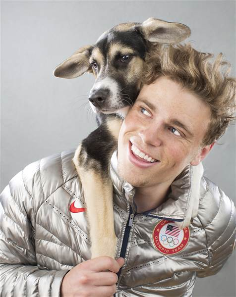

About Us
At Central Valley Pets Inc, we are dedicated to providing a safe, loving, and welcoming environment for children in need of forever families. Our mission is to connect children with adoptive parents who are ready to provide them with the care, support, and love they deserve. With a deep commitment to making a positive impact on children's lives, our center works to facilitate the adoption process in a way that respects the rights of both the children and the families involved. We understand that adoption is a life-changing experience, not only for the children but also for the families who choose to open their hearts and homes. Therefore, our approach is focused on supporting and guiding both prospective adoptive parents and children every step of the way. Whether you are considering adopting a child, fostering a child, or are currently in the adoption process, our team is here to offer advice, counseling, and assistance. Our team consists of highly skilled professionals with expertise in adoption, child welfare, social work, and family counseling. We work with a wide variety of families, ensuring that the adoption process is transparent, ethical, and compassionate. We are dedicated to advocating for the children’s best interests and work tirelessly to ensure they are placed in homes where they will thrive and grow. The adoption process can often feel overwhelming, but our team is here to make it as smooth and seamless as possible. We provide in-depth information about the different types of adoption programs available, such as domestic, international, and foster-to-adopt programs. Each program has its own requirements, but our staff is always ready to answer questions, provide guidance, and ensure that every potential parent is well-prepared for the journey ahead.
Central Valley Pets Inc. also focuses on educating families about the emotional and psychological needs of adopted children. We offer pre-adoption counseling, support groups, and resources that help families navigate the unique challenges that can arise during the adoption process. This includes advice on attachment, trauma-informed care, and understanding the child’s background and history. We also strongly believe in post-adoption services. The journey does not end once a child is placed with their forever family. Our center continues to offer support and resources to families post-adoption to help ensure the child’s long-term success and well-being. This includes follow-up visits, counseling, and additional support when needed.
Our core belief is that every child deserves a loving and stable family, and every family has the capacity to provide that care. We are proud to have successfully matched countless children with families who offer love, stability, and security. The positive impact these adoptions have on the children and families involved is immeasurable, and it is what keeps our team motivated and passionate about the work we do. In summary, Central Valley Pets Inc. is a place where hope, love, and dreams come together to create lasting family bonds. We believe in the power of adoption to transform lives and are committed to making the process as meaningful and fulfilling as possible for everyone involved. We invite you to join us on this beautiful journey and to learn more about how we can help you start or expand your family through adoption.